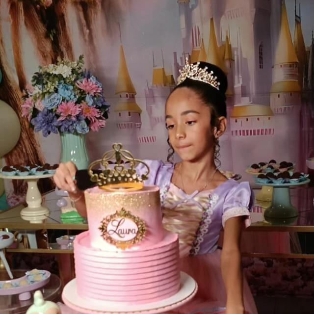

Você chegou e coloriu o meu mundo com os tons mais bonitos. Ver você crescer, cheia de sonhos e luz, é o meu maior orgulho. Que você nunca esqueça que é forte, amada e capaz de brilhar em qualquer palco que a vida lhe der!
Sorriso Doce
Melhor Abraço
Minha Estrela